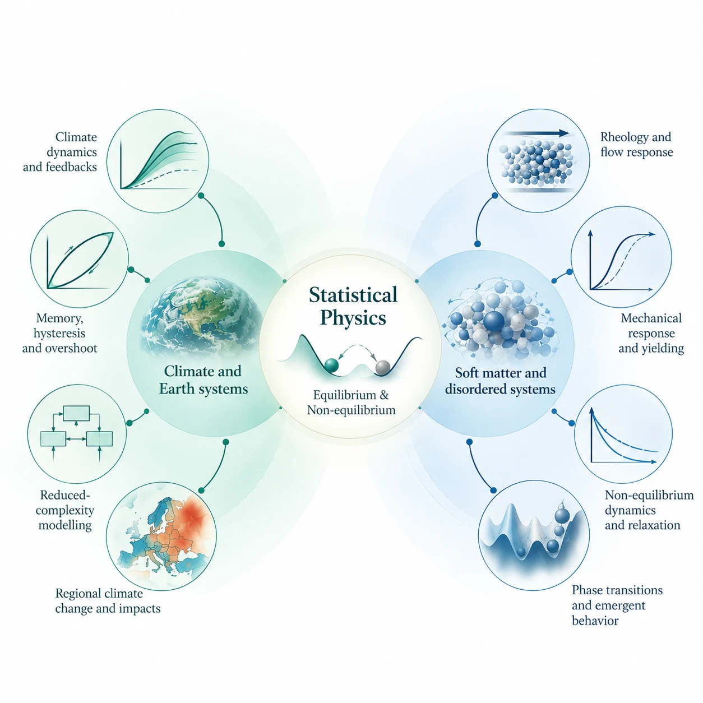

Gaurav Prakash Shrivastav
Climate Scientist & Statistical Physicist
Integrated Climate Impacts Group
Energy, Climate, and Environment Program
International Institute for Applied Systems Analysis (IIASA)
Laxenburg, Austria
Research interests
- Response of complex systems to external forcing
- Dynamical response, relaxation, feedbacks, phase transitions and collective behaviour; equilibrium and non-equilibrium statistical physics, memory, and competing timescales.
- Climate and Earth systems
- Climate dynamics and Earth-system feedbacks, reduced-complexity modelling, and the role of memory, hysteresis, overshoot and irreversibility in climate response.
- Soft matter and disordered systems
- Rheology of complex fluids, mechanical response of amorphous solids, yielding, and phase behaviour of interacting particle systems.
